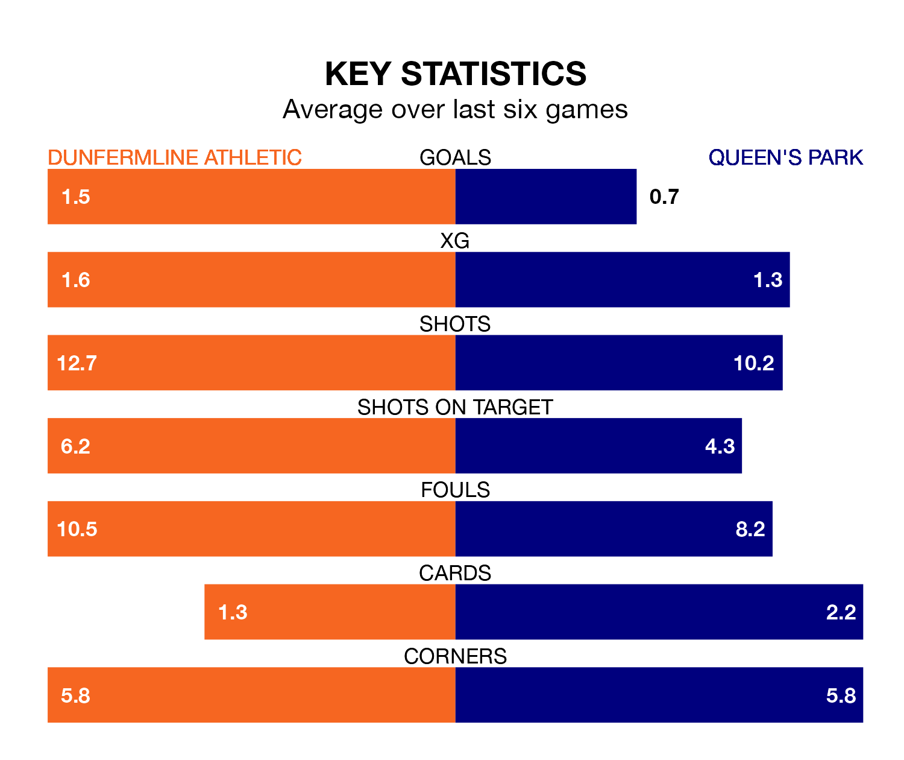

Queen's Park make the journey to KDM Group East End Park to play Dunfermline Athletic on Saturday looking to pick up points to end their three-game losing streak.
Queen's Park's struggles have left them with five points from their last six Championship matches, while their opponents have earned 10 from a possible 18.
Queen's Park are ninth in the table after 33 games, of which they have won nine and drawn nine, earning 36 points.
Dunfermline are four places ahead of the Spiders in fifth, with 11 wins and nine draws putting them on 42 points.
In the last 10 years, Dunfermline and Queen's Park have played each other on six occasions. Dunfermline won two of them, Queen's Park three, and they drew once.
On average, Dunfermline scored 0.8 goals and the Spiders 1.2 in those matches.
Their last meeting was on February 10, when Queen's Park won 3-0 away.
In Ruari Paton, the visitors have one of the league's most on-form strikers so far this season. He has notched 16 goals in 33 appearances, to sit third in the scoring charts.
His goal rate of one every 184 minutes is quicker than that of Craig Wighton, Athletic's top scorer with a goal every 219 minutes, and a total of five goals in 19 games.
With 39 goals in 33 games so far this season, the home team are the league's third-lowest scorers with 1.2 goals per game. But they are conceding fewer than average too, letting in 44 goals at a rate of 1.3 per game.
Queen's Park are also below average scorers, with 1.3 goals per game, compared to a league average of 1.4. They have conceded 1.7 goals per game.
Dunfermline's last match was on April 13, a 2-1 loss against Airdrieonians, with Malachi Walcott getting the goal for Dunfermline.
Queen's Park lost 1-0 against Inverness CT last time out, also on April 13.
Saturday's match will be refereed by Colin Steven, who has taken charge of nine Championship games so far this season, issuing one red card and booking 21 players. He has not awarded any penalties.
The last Dunfermline game Steven refereed was a 3-1 home win against Dundee United on March 15. His last Queen's Park match was their 2-1 win away at Ayr United on March 23.
Updated: 15:40 (UTC), 18/04/24